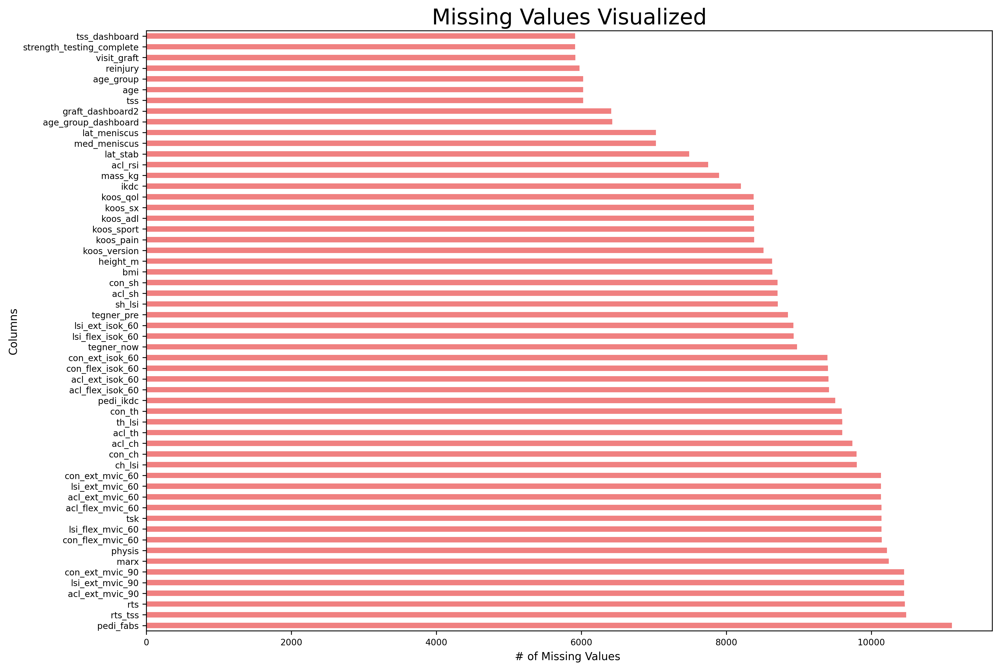
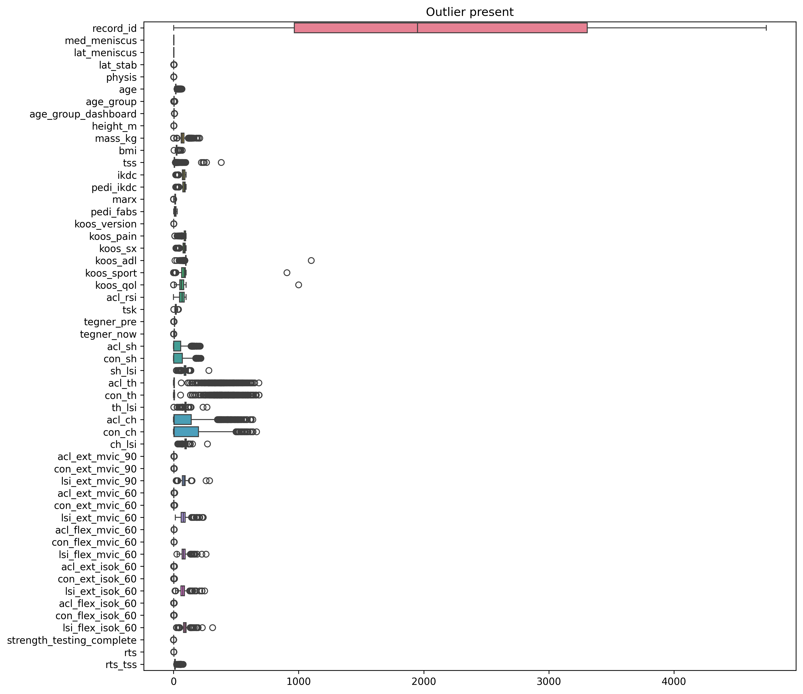

2 Data Cleaning
2.1 Data Cleaning - Removing unnecessary columns, renaming variables, identifying missing values, imputing missing values
2.1.1 Removing unnecessary columns (columns with zero data)
df.columns[df.isnull().all()]# these are columns that have no data ( we need to drop)
df.drop(columns=['redcap_repeat_instrument', 'tss_tegner'], inplace=True)
total_rows = len(df)
missing_summary = pd.DataFrame({"Column Name": df.columns,"Non-Null Count": df.notnull().sum().values,"% Missing": df.isnull().mean().values * 100})
missing_summary = missing_summary.sort_values(by="% Missing", ascending=False)
missing_summary| Column Name | Non-Null Count | % Missing |
|---|---|---|
| record_id | 11150 | 0.00% |
| redcap_event_name | 11150 | 0.00% |
| sex_dashboard | 4737 | 57.52% |
| graft_dashboard2 | 4737 | 57.52% |
| med_meniscus | 4121 | 63.04% |
| lat_meniscus | 4121 | 63.04% |
| lat_stab | 3662 | 67.16% |
| physis | 936 | 91.61% |
| visit_sex | 5234 | 53.06% |
| visit_graft | 5234 | 53.06% |
| age | 5126 | 54.02% |
| age_group | 5126 | 54.02% |
| age_group_dashboard | 4724 | 57.62% |
| age_group_dashboard_use | 5237 | 53.02% |
| height_m | 2518 | 77.41% |
| mass_kg | 3251 | 70.84% |
| bmi | 2517 | 77.42% |
| tss | 5125 | 54.04% |
| tss_dashboard | 5237 | 53.02% |
| reinjury | 5175 | 53.58% |
| ikdc | 2951 | 73.53% |
| pedi_ikdc | 1647 | 85.23% |
| marx | 911 | 91.83% |
| pedi_fabs | 37 | 99.67% |
| koos_version | 2637 | 76.35% |
| koos_pain | 2767 | 75.17% |
| koos_sx | 2769 | 75.15% |
| koos_adl | 2769 | 75.15% |
| koos_sport | 2768 | 75.16% |
| koos_qol | 2775 | 75.10% |
Looking for missing values in the rest of the columns
df.isnull().sum() # looking for missing data| Column Name | Missing Values |
|---|---|
| record_id | 0 |
| redcap_event_name | 0 |
| sex_dashboard | 6413 |
| graft_dashboard2 | 6413 |
| med_meniscus | 7029 |
| … | … |
| con_flex_isok_60 | 9402 |
| lsi_flex_isok_60 | 8928 |
| strength_testing_complete | 5913 |
| rts | 10464 |
| rts_tss | 10479 |
Finding the top few columns that have the least percentage of missing values, this shows that there exists a huge volume of missing values in the dataset and that imputation is very necessary in order to make any meaningful insight out of this dataset
missing_percent = df.isnull().sum() / len(df) * 100
print(missing_percent.nsmallest(10))| Column Name | % Missing Values |
|---|---|
| record_id | 0.000000 |
| redcap_event_name | 0.000000 |
| age_group_dashboard_use | 53.031390 |
| tss_dashboard | 53.031390 |
| strength_testing_complete | 53.031390 |
| visit_sex | 53.058296 |
| visit_graft | 53.058296 |
| reinjury | 53.587444 |
| age | 54.026906 |
| age_group | 54.026906 |
2.1.2 Seeing values to make the nan as Not reported
Before carrying out imputation for the missing values, replace all ‘NaN’ entries in the various demographic variables as Not reported for consistency
print(df["sex_dashboard"].unique())
print(df['visit_sex'].unique())
print(df['age_group_dashboard_use'].unique())
print(df['graft_dashboard2'].unique())
print(df['visit_graft'].unique())[‘Male’ nan ‘Female’ ‘Not Reported’] [nan ‘Male’ ‘Female’ ‘Not Reported’] [nan ‘21 to 25 years’ ‘12 to 14 years’ ‘15 to 17 years’ ‘18 to 20 years’ ‘26 to 34 years’ ‘Not Reported’] [‘Other’ nan ‘HS autograft’ ‘BTB autograft’ ‘Allograft’ ‘QT autograft’] [nan ‘Other’ ‘HS autograft’ ‘BTB autograft’ ‘Allograft’ ‘QT autograft’]
print(df['redcap_event_name'].unique())[‘baseline_arm_1’ ‘visit_1_arm_1’ ‘long_term_outcomes_arm_1’ ‘visit_2_arm_1’ ‘visit_3_arm_1’ ‘visit_4_arm_1’ ‘visit_5_arm_1’ ‘visit_6_arm_1’ ‘data_upload_arm_2’ ‘visit_7_arm_1’ ‘visit_8_arm_1’ ‘visit_9_arm_1’]
print(df['strength_testing_complete'].unique())[nan 2. 0.]
print(df['med_meniscus'].unique())
print(df['lat_meniscus'].unique())[nan 1. 3. 2.] [nan 3. 1. 2.]
Gender, Age Groups, ( make the nan as Not reported) ( input)
df['age_group_dashboard_use'] = df['age_group_dashboard_use'].fillna('Not Reported')
df['sex_dashboard'] = df['sex_dashboard'].fillna('Not Reported')
df['visit_sex'] = df['visit_sex'].fillna('Not Reported')Visualizing and observing the presence of missing values across all columns and taking a look at what columns are useful, and what columns are meaningless
# I've also included a visual aid of how many missing values we have for each variable
# Bar plot of missing values for each column
missing_vals = df.isnull().sum()
missing_vals = missing_vals[missing_vals > 0] # making sure to inlcude only the missing values ( no variables with complete)
missing_vals.sort_values(inplace=True)
plt.figure(figsize=(14, 10))
missing_vals.plot(kind='barh', color='lightcoral') # making this horizontal bargraph to enhance readability
plt.title('Missing Values Visualized', fontsize=20)# let's make sure the title is big
plt.xlabel('# of Missing Values ', fontsize=10)
plt.ylabel('Columns', fontsize=10)
plt.xticks(fontsize=8)
plt.yticks(fontsize=8)
plt.gca().invert_yaxis() # we need this code to ensure that we have the missing values inverted
plt.savefig('missing_values.png', dpi=300, bbox_inches='tight', facecolor='white')
plt.show()
ure(figsize=(12, 12))
sns.boxplot(data=df, orient="h")
plt.title("Outlier present")
plt.savefig('outliers.png', dpi=300, bbox_inches='tight', facecolor='white')
plt.show()
Exploratory phase: to impute data more effectively, we chose to split the imputation process by categorical and numerical variables. We chose to impute the categorical variables via the frequency of a cateogory’s presence in the dataset, and impute the numerical variables via the mean of the column’s numerical values.
# Let's split the categorical and numerical columns
categorical_columns = df.select_dtypes(include=['object']).columns # this includes strings
numerical_columns = df.select_dtypes(include=['float64', 'int64']).columns # these are numbers with meaning
# Now let's impute categorical(mode) and numerical columns (median)
df[categorical_columns] = df[categorical_columns].fillna(df[categorical_columns].mode().iloc[0])
df[numerical_columns] = df[numerical_columns].fillna(df[numerical_columns].median())
df.isnull().sum()| Column Name | Missing Values |
|---|---|
| record_id | 0 |
| redcap_event_name | 0 |
| sex_dashboard | 0 |
| graft_dashboard2 | 0 |
| med_meniscus | 0 |
| … | … |
| con_flex_isok_60 | 0 |
| lsi_flex_isok_60 | 0 |
| strength_testing_complete | 0 |
| rts | 0 |
| rts_tss | 0 |